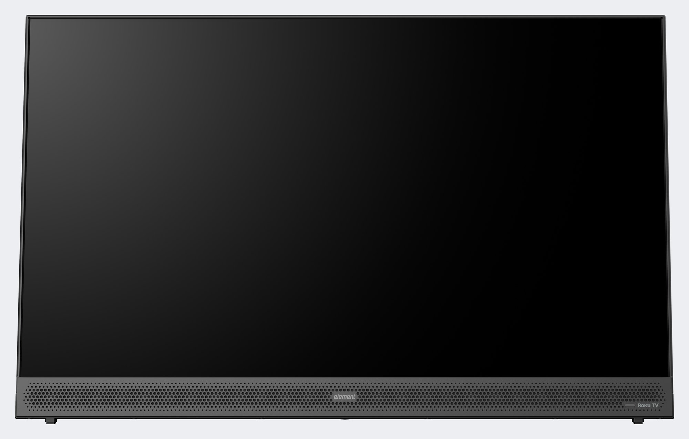
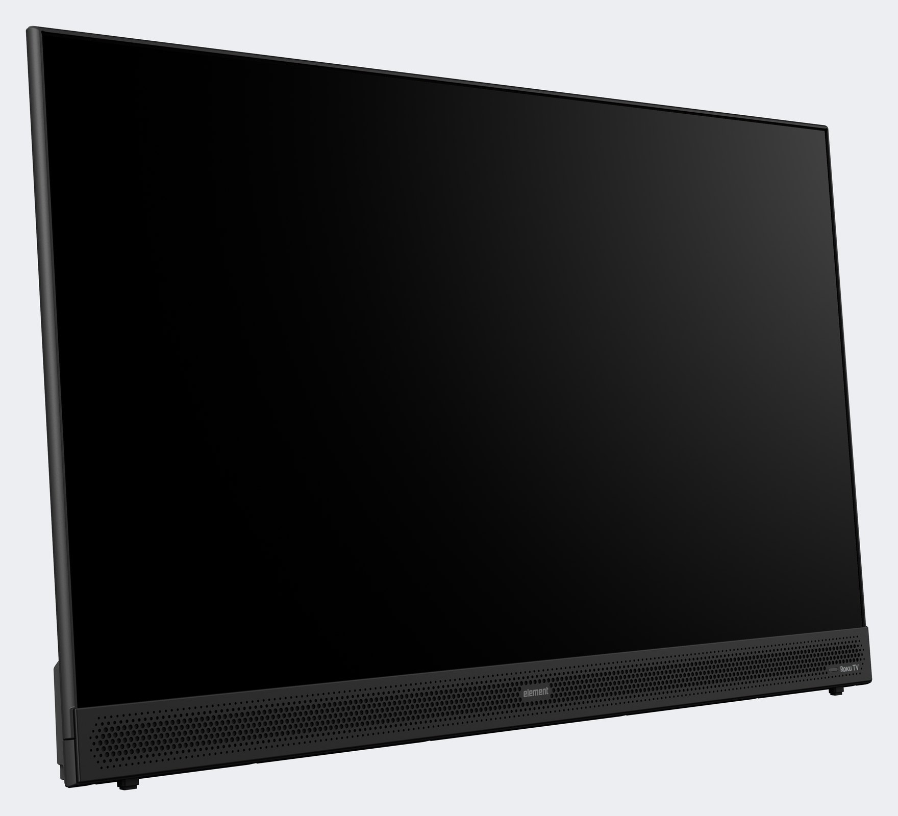
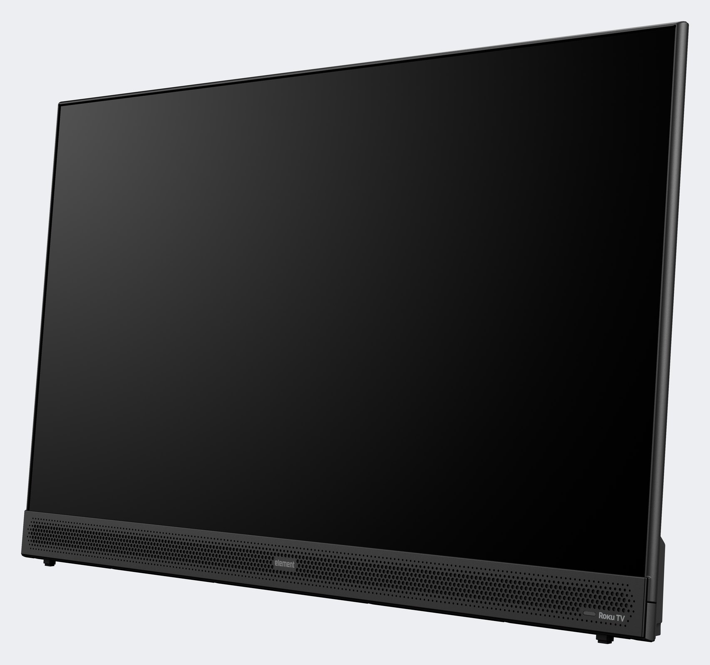
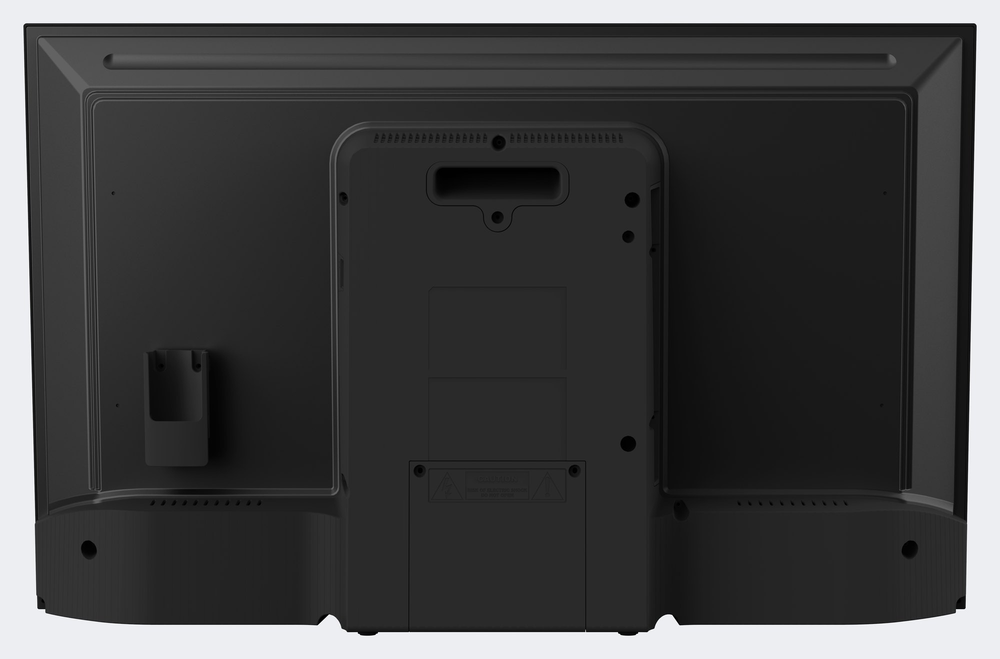
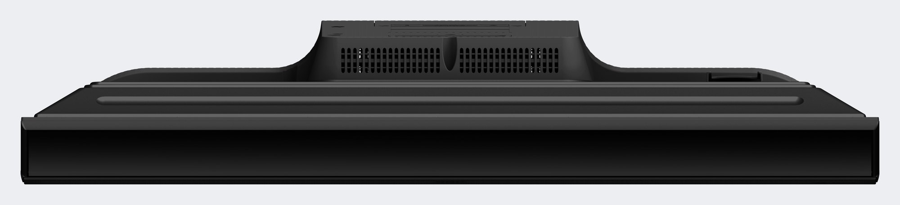
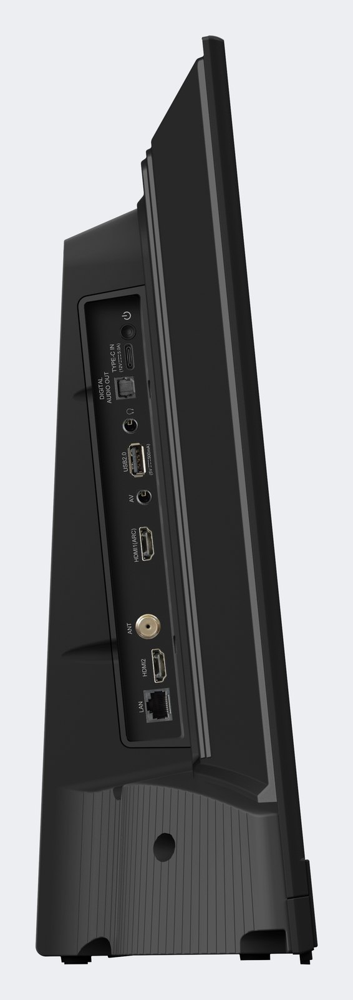
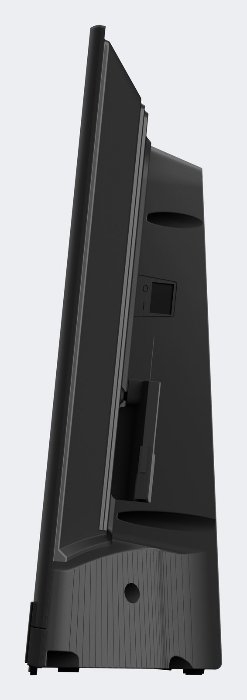
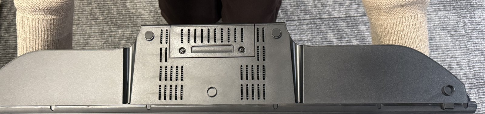

SKU: E300AG32PBRPrefix: E300AG32PBR_Assets: 1 (TV, screen off)Size: 28.5 × 17.9 × 5.5 in (W × H × D)Due: agreed before start
E300AG32PBR_REMOTE_HOLDER. Top groove = carrying handle.MAT_PRINT_SILVER (was MAT_PRINT_LIGHT_GRAY).Create a 3D model, in one colorway (black), of the Element 32" Portable TV using the provided reference images and specs. The model must be true to size, because it will be viewed in 3D and in AR. A CAD file is not available as a starting point.
| Overall sizeUPDATED NOV 3 | 724 × 455 × 140 mm (28.5 × 17.9 × 5.5 in, W × H × D), from Element. Element confirmed this is the outer box of the whole product standing on the floor: the height includes the speaker bar, and the depth is the footprint at the rear module (the deepest point, see Bottom). |
|---|---|
| Screen | 32" class, 16:9, 1080p. Active area about 697 × 392 mm (31.5 in diagonal). Thin dark bezel, about 5 mm, on three sides; the bottom edge meets the speaker bar. |
| StanceUPDATED NOV 3 | Portable and freestanding: no stand and no feet as such. The TV sits flat on its base and leans back about 6 degrees. The underside has five small round rubber pads (about 15 mm across, almost flush): two at the front corners, one at the front center, and two under the rear module near its back corners. See Bottom, Side_Left and Side_Right. |
| Measured from the renders | These come from measuring the renders against the 724 × 455 box, so treat them as close, not exact. Screen face leans back about 6 degrees (top edge sits about 46 mm behind the bottom). Speaker bar front face about 55 mm tall from the floor, standing about 2 mm proud of the screen plane; perforated band about 30 mm tall within it. Rear shell: a raised central plateau about 610 mm wide and 90 mm deep from the front plane, with a sloped frame about 60 mm wide down to the outer edge, and a recessed band across the bottom 100 mm. Rear module: about 243 mm wide, full depth 140 mm at the floor tapering to about 125 mm at 350 mm up, then a wider collar (about 290 mm) that curves into the shell by about 385 mm up. |
| Front | Full-width perforated speaker grille strip below the screen, with the element wordmark centered, a status LED and Roku TV mark at the right end. |
| BackUPDATED NOV 3 | Rear shell with a raised central plateau, a sloped frame around it, and a recessed band across the bottom. In the middle sits a raised module (a wedge in side view) that holds the battery and electronics. On the module: a recessed handle slot at the top, six mounting holes of mixed sizes (not a standard VESA pattern; model what you see), two faint rectangular service panels, a caution label at the bottom, and slot vents along the top. On the shell to the left of the module (as you look at the back): the remote holder, an open-top pocket the remote slides into (confirmed by Element). The lower band has one round port near each end, about 16 mm across. |
| Left side (viewer's left when facing the screen) | Recessed port panel, top to bottom: power button, USB-C IN (12 V), DIGITAL AUDIO OUT (optical), headphone 3.5 mm, USB 2.0, AV 3.5 mm, HDMI 1 (ARC), ANT (coax), HDMI 2, LAN (RJ45). All labels are printed on the panel; read them from Side_Left. |
| TopUPDATED NOV 3 | Slot vents across the top of the rear module, and the carrying handle: the long recessed slot along the top edge of the rear shell is where your fingers go (confirmed by Element). Model it as a real recess with a rounded inner edge, deep enough to read as a grip. |
| BottomUPDATED NOV 3 | From the Bottom photo: a flat underside the full width of the TV. The base bar is about 90 mm deep at the ends and steps back to the full 140 mm under the rear module. Under the module: a small rectangular plate (about 110 × 45 mm) with two screws and a long slot, centered, plus rows of slot vents either side of it and below it. Five round rubber pads as described under Stance. The two outer ends of the base are rounded in plan (roughly 40 mm radius, also visible in Top). |
| Scale check | Width 724 mm edge to edge across the speaker bar; height 455 mm from the bottom of the feet to the top edge of the bezel. If the screen is not about 697 mm wide inside the bezel, the scale is wrong. |
UPDATED NOV 3Source: the manufacturer's product information (Oct 28, 2026), the 7 renders, the bottom photo and the answers Element gave on Nov 3. There is no dimensioned drawing for this product: the 724 × 455 × 140 mm box plus the images are the spec.
Seven manufacturer renders from Element (8000 × 4500 px transparent PNG), one phone photo of the underside, and the vector logo art. Click any image for the full-resolution original. The files are Element's property for this job only: do not post or share them.








Logo art from ElementNEW NOV 3 (vector, both specified as Pantone 877 C, a metallic silver print). Use these for the decals instead of redrawing them.
Separate objects, named exactly as below. Keep it to about 20 objects; small repeated details (feet, bolt bosses) can be one object each.
| Object name | What it is | Material | Detail |
|---|---|---|---|
E300AG32PBR_SCREEN | Display glass, slightly inset in the bezel. One flat quad is fine. | MAT_SCREEN_GLASS | Full |
E300AG32PBR_BEZEL | Front frame around the screen, three sides, with the small chamfer seen in the angled views | MAT_PLASTIC_BLACK_MATTE | Full |
E300AG32PBR_REAR_SHELLUPDATED | Back cover of the panel: raised central plateau, sloped frame to the edges, recessed lower band with the two round ports, and the carrying handle slot along the top edge | MAT_PLASTIC_BLACK_MATTE | Normal |
E300AG32PBR_REAR_MODULE | Raised wedge on the back, flaring into a wider collar at the top that blends into the shell: handle slot, six mounting holes, two faint service-panel recesses, slot vents along the top | MAT_PLASTIC_BLACK_MATTE | Full |
E300AG32PBR_SPEAKER_BARUPDATED | Base housing below the screen, full width, outer ends rounded in plan, leaning with the screen. Flat underside with the vent rows and the small slotted plate under the module (see Bottom); vents as texture, the plate and its slot as simple geometry | MAT_PLASTIC_BLACK_MATTE | Full |
E300AG32PBR_GRILLE | Perforated front face of the speaker bar. Texture the holes (normal + roughness, or an opacity map over a dark backing), do not model thousands of holes. | MAT_GRILLE_PERFORATED | Full |
E300AG32PBR_LOGO_ELEMENTUPDATED | element wordmark, centered on the grille, from the EPS. Decal plane or printed into the grille texture. | MAT_PRINT_SILVER | Full |
E300AG32PBR_LOGO_ROKUUPDATED | Roku TV mark at the right end of the grille, from the AI file, with the status LED next to it | MAT_PRINT_SILVER | Normal |
E300AG32PBR_LED | Small status indicator next to the Roku mark | MAT_LED_OFF | Simple |
E300AG32PBR_FEETUPDATED | Five round rubber pads, almost flush with the underside: two at the front corners, one front center, two under the rear module (one object, all pads) | MAT_RUBBER_BLACK | Simple |
E300AG32PBR_PORT_PANEL | Recessed panel on the left side with printed labels | MAT_PLASTIC_BLACK_MATTE + label texture | Full |
E300AG32PBR_PORTS | The 10 connectors: power button, USB-C, optical, 3.5 mm × 2, USB-A, HDMI × 2, coax, RJ45. Simple shapes with the right colors (HDMI and USB silver, coax brass, USB-A insert white or black, RJ45 black). | MAT_METAL_CONNECTOR, MAT_PLASTIC_BLACK_MATTE | Normal |
E300AG32PBR_REMOTE_HOLDERRENAMED | Remote holder on the shell, left of the module as you look at the back: about 50 × 100 mm, open-top pocket, two screws. Model it empty. | MAT_PLASTIC_BLACK_MATTE | Normal |
E300AG32PBR_LABEL_CAUTION | Caution label at the bottom of the rear module (decal) | MAT_LABEL | Simple |
Materials must use the PBR metallic/roughness workflow with 2K (2048 × 2048 px) textures; the grille may use 4K. Use a unique material for each part as listed in the table below, named exactly as shown. Each material needs its own UV layout, with the UV islands filling the full 0 to 1 UV space to make the most of the texture resolution. Scale the UVs so that logos, labels and other fine details get enough texel density to stay sharp and legible in the 3D viewer. Procedural shading is fine to author with, but everything must be baked to textures: the GLB is what the customer sees.
| Material | Look | Notes |
|---|---|---|
MAT_PLASTIC_BLACK_MATTE | Very dark gray, near black, fine texture, low gloss | Bezel, shells, speaker bar body. Read the exact tone from Back.png: it is dark gray, not pure black. |
MAT_SCREEN_GLASS | Black, glossy, slight reflection | Screen off. Roughness low, base color near black. No emission. |
MAT_GRILLE_PERFORATED | Dark gray metal with a regular hex-pattern perforation | Perforation in the texture (normal + roughness, optional opacity). Hole pitch from Front_Straight-On at full size. |
MAT_PRINT_SILVERRENAMED | Pantone 877 C metallic silver print, reads as light gray from a distance | element and Roku TV marks, from the vector art in section 2. Slightly metallic, low roughness. |
MAT_LED_OFF | Dark translucent lens | No emission in the base asset. |
MAT_RUBBER_BLACK | Matte black rubber | Feet. |
MAT_METAL_CONNECTOR | Brushed silver and brass | One material with a baked color map is fine for all connectors. |
MAT_LABELUPDATED | Printed label | Caution label and port-panel text. No vector art exists for these; rebuild legible text from Back.png and Side_Left.png. |
E300AG32PBR_v1.glb. Meters, real-world size, standard glTF Y-up, no Draco or KTX compression, textures embedded, all objects and materials named as above.E300AG32PBR_ / MAT_ names above. Nothing called Cube, Plane or Material.001.